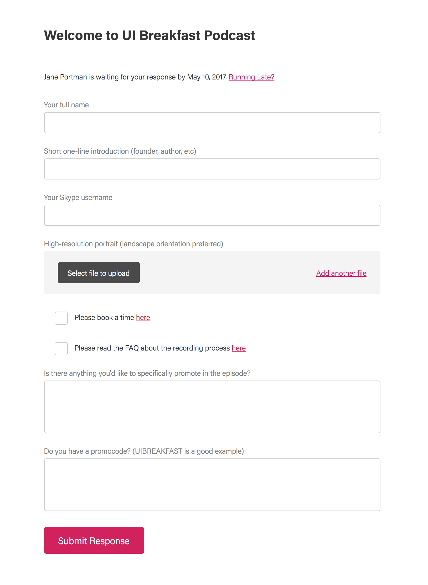

Some podcasters think that automation makes everything less personal. I see their point! But both my guests and myself are busy people. Automation speeds up the process, eliminates email exchange, and prevents both parties from forgetting things (which happens all the time). Also, I’ve been getting plenty of compliments about such professional setup.
My name is Jane Portman, and I’ve been running UI Breakfast Podcast for years. I enjoy interviewing people. I love finding new guests and figuring out useful topics. But what about the rest of the crazy workflow?
In this article, I’ll show you how to automate your podcast onboarding in a few simple steps.
1. Approach the Desired Guest
Let’s say I have my eyes on a certain guest. Before approaching them, I review their latest publications — blog posts, conference talks, etc — and find a practical topic that’s exciting for my audience and fits the episode lineup. Then I send them a simple email (or a tweet) which essentially says:
“Would you like to appear at XX podcast and talk about YY? Just say yes and I’ll send over the details.”
I never pretend that I’m their lifetime fan or know their work inside out, because it would not be true. But I do add a few words of appraisal (as human and relevant as I can).
The response rate to these emails is high because people like appearing at podcasts (and my podcast looks decent, too). Then I send them a simple questionnaire.
2. Send Your Onboarding Questionnaire
Your onboarding questionnaire is a form with all necessary things tied together. With a form, it becomes hard to forget something, and everything is perfectly structured and stored. Before the recording, pull up their response screen instead of “fishing” for information in email threads.
Here’s what’s my questionnaire looks like.

Short one-line introduction — so that they can brainstorm it, and I can be confident about their exact role.
Skype username — so that I can call the guest right away.
High-resolution portrait — previously had been tackled as an afterthought. “Oh, and can you please send over a picture of yours?” — which guests often forget. Then you end up on the publication date with no portrait on hand.
I ask them to book a recording time using my Calendly link. That’s a well-known scheduling tool that most podcasters are already using. I only make myself available for meetings twice a week (including client calls), which allows me to stack up a few recordings and save time.
I ask them to read my welcome page — it’s a dedicated page on my website, where I explain how we do the recording and structure the conversation (more about such pages below).
I ask what they want to promote — my goal is to help guests promote their current “big thing.”
Promocode — usually serves the above goal. Discounts are a powerful way to drive sales and track them. By including the promocode request in the questionnaire, I help the guest prepare the promocode in advance. Otherwise, they can call out the promocode and then forget to set it up — why create such a risk?
You could ask them for other things, like their website URL or Twitter handle. But I ask for these things anyways during the interview. The key principle here is keep the form as short as possible.
3. Automate Your Follow-Up
You can create the above questionnaire with your form builder of choice: Wufoo, Typeform, Google Forms, or any other.
My guests are busy people and the podcast invite can slip through the cracks. So I use Tiny Reminder for sending forms with automated follow-up. I just add a guest and forget about it, which provides amazing freedom of mind. Here’s what the reminder emails look like.
4. Share Your Onboarding Page
You can probably do without it during the early days of your podcast. However, it’s a big time-saver — you can send guests to this FAQ page instead of answering their questions. And more importantly, you can inform and inspire your guests.
Sidenote. It doesn’t have to be a fancy web page! Any shared document will do the job: Google Docs, Dropbox Paper, etc.
While writing this page, your primary assumption should be that your guests are busy people and know nothing about your podcast (neither do they have time to learn). With this in mind, address the following goals:
- Give your guest a brief idea of your podcast topic and audience.
- Link to the episodes list, so that they can check out the format and listen to them (don’t count on that though).
- Explain how you structure the interview and what kinds of questions they should expect. For example, I start each episode with a blitz questionnaire, and these questions are listed on the onboarding page.
- Explain how exactly the recording is done — which software you use, etc. In my case, we talk via Skype, but the main recording is held via Zencastr, which records separate tracks locally and uploads them to my Dropbox. I also record a backup version with my Skype Call Recorder (just in case).
- Some guests might be new to podcasting! Give them a few tips: use a good mic, wear headphones, talk slowly, etc.
- Throughout the page, use friendly tone and make your guest feel welcome!
Here’s my guest onboarding page as an example.
Previously, I didn’t have a special form, and simply asked people to follow action steps in the end of this onboarding page. The results were far from perfect! Guests would schedule the recording, but often forget about other things.
How Other Podcasters Do It
Here are similar pages so that you can get an idea how other people do it. You can find these pages through Google, but please respect the hosts and don’t play with their forms and scheduling links:
- Rocketship.fm
- The Consulting Pipeline Podcast by Philip Morgan
- Business of Freelancing by Brennan Dunn
- The Unofficial Shopify Podcast by Kurt Elster (check out their questionnaire, too)
Set Up Your Process Today
Ready to automate onboarding for your podcast? Don’t waste precious time, set up the new process today. Free up your mind for more important things. And please share this article so that other podcasters can do the same!